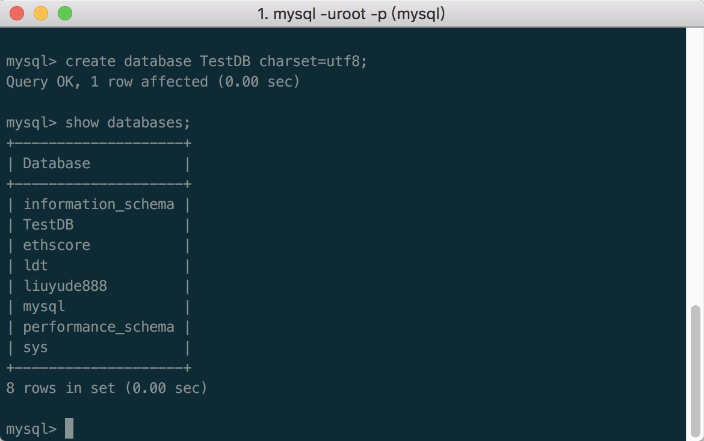
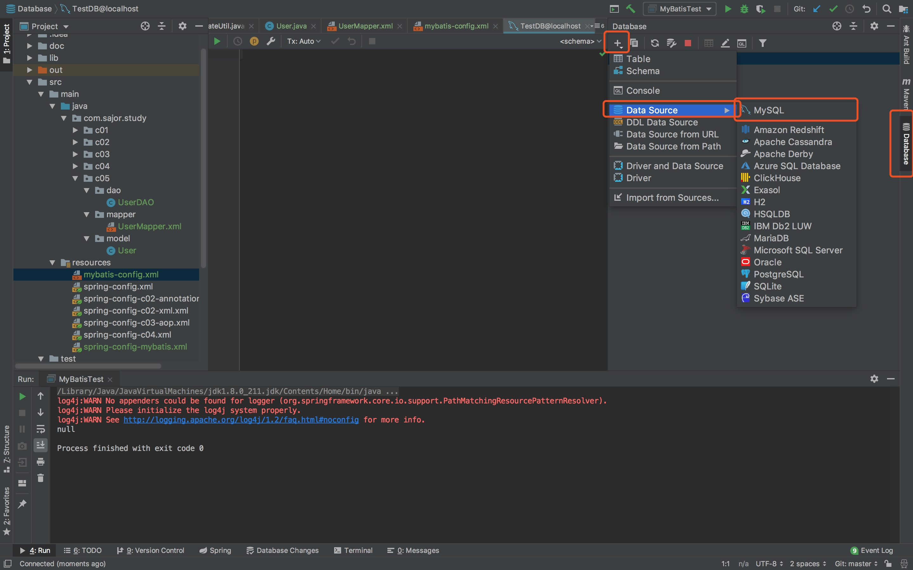
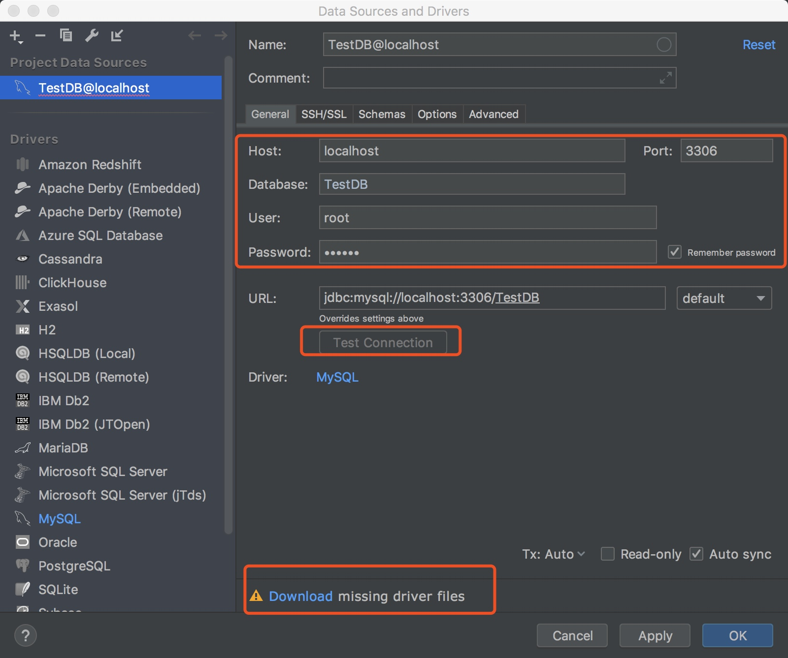
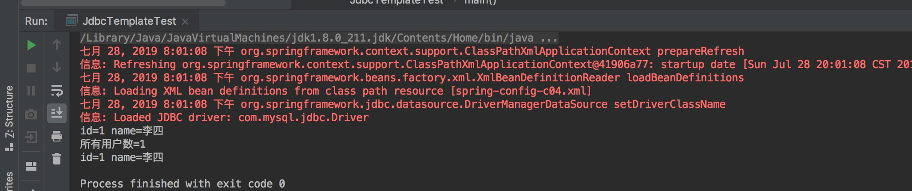

创建MySQL数据库
首先进入MySQL数据库创建 TestDB 数据库
create database TestDB charset=utf8;

到IDEA右侧点击Database，之后点击加号添加数据库，选择Data Source>MySQL 填写连接信息

填写好数据库信息后点击 Download 下载驱动包，下载完成后点击Test Connection 测试连接情况，之后点击ok。

注意
如果你要直接粘贴下面代码的话，请记得修改这些内容
数据库名： TestDB
数据库用户： root
数据库密码： 123456
创建项目
1、引用 MySQL 数据库 jar 包
点击 File>Project Structure...，选中 Libraries，添加 java 引用
在 lib 中选择 mysql-connector-java-5.x.x.jar确认
2、创建两个新的包
com.sajor.study.c04
test.com.sajor.study.c04
3、新建一个类 JdbcTemplateUtil
package com.sajor.study.c04;
import com.sajor.study.c01.Student;
import org.springframework.jdbc.core.JdbcTemplate;
import org.springframework.jdbc.core.RowMapper;
import java.sql.ResultSet;
import java.sql.SQLException;
import java.util.List;
public class JdbcTemplateUtil {
private JdbcTemplate jdbcTemplate;
private String errorTest;
public void setJdbcTemplate(JdbcTemplate jdbcTemplate) {
this.jdbcTemplate = jdbcTemplate;
}
public void createTable() {
jdbcTemplate.execute("DROP TABLE IF EXISTS user");
jdbcTemplate.execute("CREATE TABLE user (\n" +
" id int(11) NOT NULL AUTO_INCREMENT,\n" +
" name varchar(50) DEFAULT NULL,\n" +
" sex varchar(2) DEFAULT NULL,\n" +
" email varchar(125) DEFAULT NULL,\n" +
" PRIMARY KEY (`id`)\n" +
")"
);
}
public void addUser(Student student) {
String sql = "insert into user (name,sex,email) values(?,?,?)";
jdbcTemplate.update(sql, student.getName(), student.getSex(), student.getEmail());
}
public void deleteUser(int id) {
String sql = "delete from user where id=?";
jdbcTemplate.update(sql, id);
}
public void updateUser(Student student) {
String sql = "update user set name=?,sex=?,email=? where id=?";
jdbcTemplate.update(sql, student.getName(), student.getSex(), student.getEmail(),
student.getId());
}
// 简单查询，按照 ID 查询，返回字符串
public String searchUserName(int id) {
String sql = "select name from user where id=?";
return jdbcTemplate.queryForObject(sql, String.class, id);
}
// 复杂查询返回 List 集合
public List<Student> findAll() {
String sql = "select * from user";
return jdbcTemplate.query(sql, new StudentRowMapper());
}
//根据 id 查询
public Student searchUser(int id) {
String sql = "select * from user where id=?";
return jdbcTemplate.queryForObject(sql, new StudentRowMapper(), id);
}
//使用 spring RowMapper 进行数据集和对象映射
class StudentRowMapper implements RowMapper<Student> {
//rs 为返回结果集，以每行为单位封装着
public Student mapRow(ResultSet rs, int rowNum) throws SQLException {
Student student = new Student();
student.setId(rs.getInt("id"));
student.setName(rs.getString("name"));
student.setSex(rs.getString("sex"));
student.setEmail(rs.getString("email"));
return student;
}
}
}
4、在 Spring 配置文件中配置数据库信息及 Bean
创建spring-config-c04.xml 将spring-config.xml的内容粘贴过来，我们根据之前的内容进行拓展
<?xml version="1.0" encoding="UTF-8"?>
<beans xmlns="http://www.springframework.org/schema/beans"
xmlns:xsi="http://www.w3.org/2001/XMLSchema-instance"
xsi:schemaLocation="http://www.springframework.org/schema/beans http://www.springframework.org/schema/beans/spring-beans.xsd">
<bean id="student" class="com.sajor.study.c01.Student">
</bean>
<bean id="school" class="com.sajor.study.c01.School">
<property name="students" ref="student"/>
</bean>
<!-- 1.配置数据源 -->
<bean id="dataSourceJDBC"
class="org.springframework.jdbc.datasource.DriverManagerDataSource">
<property name="driverClassName" value="com.mysql.jdbc.Driver"/>
<property name="url"
value="jdbc:mysql://localhost:3306/TestDB?autoReconnect=true&characterEncoding=utf8&useUnicode=true&useSSL=false"/>
<property name="username" value="root"/>
<property name="password" value="123456"/>
</bean>
<!-- 2.配置 JDBC 模板 -->
<bean id="jdbcTemplate" class="org.springframework.jdbc.core.JdbcTemplate">
<property name="dataSource" ref="dataSourceJDBC"/>
</bean>
<!--3.定义使用 jdbc 模板的 jdbcTemplateUtil 类 -->
<bean id="jdbcTemplateUtil" class="com.sajor.study.c04.JdbcTemplateUtil">
<property name="jdbcTemplate" ref="jdbcTemplate"/>
</bean>
</beans>
5、新建一个测试类 JdbcTemplateTest
package test.com.sajor.study.c04;
import com.sajor.study.c01.Student;
import com.sajor.study.c04.JdbcTemplateUtil;
import org.springframework.context.ApplicationContext;
import org.springframework.context.support.ClassPathXmlApplicationContext;
import java.util.List;
public class JdbcTemplateTest {
public static void main(String[] args) {
ApplicationContext ctx = new ClassPathXmlApplicationContext("spring-config-c04.xml");
JdbcTemplateUtil jdbcTemplateUtil = (JdbcTemplateUtil) ctx.getBean("jdbcTemplateUtil");
//第一次测试时，运行创建库表方法。后面注释掉
jdbcTemplateUtil.createTable();
Student student = (Student) ctx.getBean("student");
student.setName("李四");
student.setSex("01");
student.setEmail("lisi@cn.cn");
jdbcTemplateUtil.addUser(student);
Student student1 = jdbcTemplateUtil.searchUser(1);
System.out.println("id=" + student1.getId() + " " + "name=" + student1.getName());
List<Student> list = jdbcTemplateUtil.findAll();
System.out.println("所有用户数=" + list.size());
for (int i = 0; i < list.size(); i++) {
Student student2 = (Student) list.get(i);
System.out.println("id=" + student2.getId() + " " + "name=" + student2.getName());
}
}
}
6、运行测试类
右键 JdbcTemplateTest 类，点击 Run 或 Debug JdbcTemplateTest.main() 运行结果
